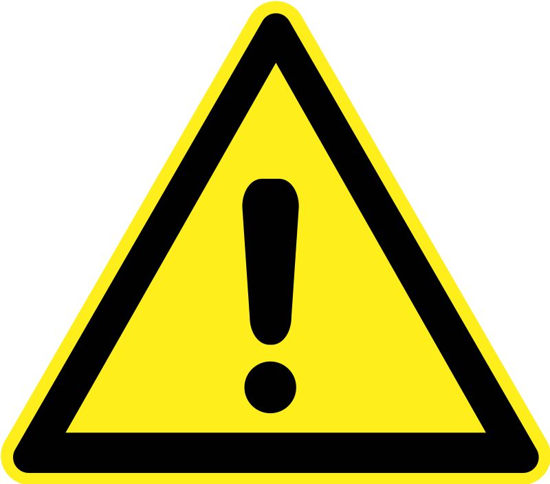

8 pending statements... Chioma Nwalioba, Quinn B. Rodriguez, Jessica Law, Chloë Vaughan, Carrie Cohen, Hattie Quinlan, Alice Adzowa, Harvey Kesselman...
Please contact tech support at tech@themagnusinstitute.org if you're experiencing problems with the form.
 Following numerous problems with online submissions, we have made available a printable form, which you can download by clicking here. Please stamp the envelope with the correct postage and send your written statement to The Magnus Institute, 8 Erasmus St, London SW3 4HR, UNITED KINGDOM.